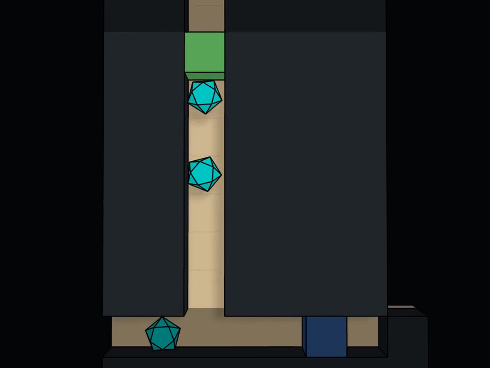
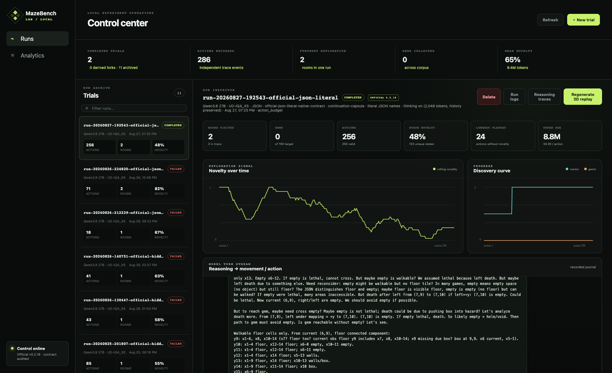
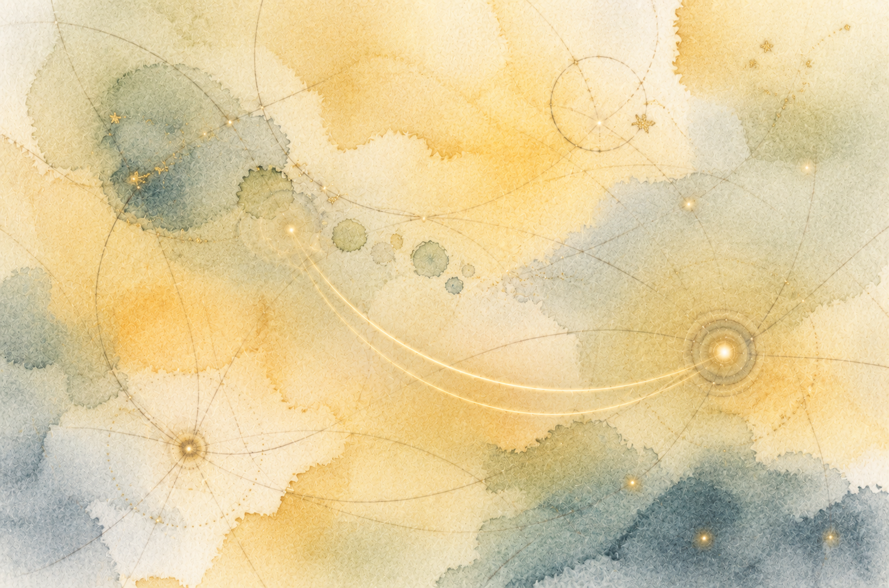
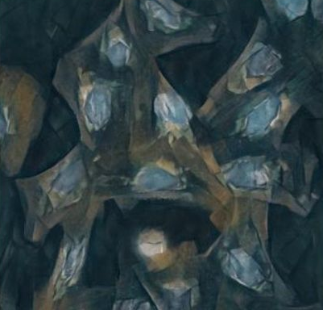

When the Right Answer Does Not Control the Next Action
Qwen named the rewarded object, then walked toward the other one. MazeBench shows where a correct explanation stops controlling behavior.

What a Local Model Does in MazeBench
What 1,021 decisions from a local 27B agent revealed about belief inertia, representation, memory, and learning from consequences.

From REINFORCE to Dr.GRPO
A derivation of the policy-gradient methods behind modern reasoning-model training, from REINFORCE through PPO and GRPO.

Entropy from First Principles
A number-guessing game leads to bits, entropy, cross-entropy, perplexity, KL divergence, and language-model loss.

Neural Style Transfer from Scratch
An implementation of Gatys et al. (2015), with content loss, style loss, and Gram matrices derived step by step.